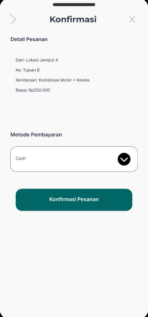
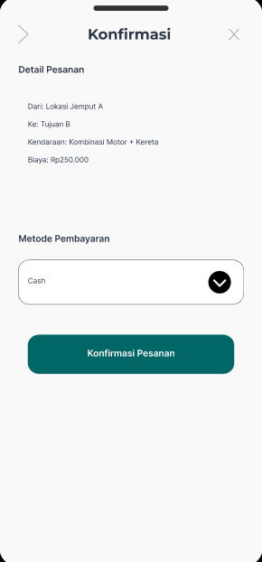

Tentang Proyek Ini
Nama saya Muhammad Raufa Hafid Widodo. Proyek ini merupakan inisiatif redesain antarmuka aplikasi transportasi online yang terintegrasi dengan dompet digital. Fokus utama studi kasus ini adalah memecahkan masalah kognitif yang dialami pengguna saat melakukan pemesanan cepat.
1. Empathize & Research
Untuk memahami pengguna, kami mengumpulkan data melalui wawancara mendalam kepada 3 partisipan (Pelajar, Mahasiswa, Pekerja) dan studi literatur tugas praktikum sebelumnya.
Affinity Mapping: Mengelompokkan temuan wawancara.
Key Insights (Hasil Wawancara)
- Pain Points: Estimasi harga sering berubah di akhir, lokasi jemput sulit ditentukan di peta.
- Expectation: Transparansi biaya total di awal tanpa biaya tersembunyi.
- Behavior: Pengguna cenderung membatalkan pesanan jika loading terlalu lama.
User Persona
Irma Carissa (13 Th)
Siswi SMPMasalah: Sulit menentukan titik jemput pagi hari.
Need: Titik jemput yang mudah dipahami.
Khansa Nabila (20 Th)
MahasiswaMasalah: Sering tertipu biaya jasa tambahan.
Need: Transparansi harga total.
Ibu Yeni (34 Th)
Guru SDMasalah: Sering terlambat karena estimasi meleset.
Need: Estimasi waktu akurat.
User Journey Map
Pemetaan langkah-langkah pengguna dari awal membuka aplikasi hingga selesai melakukan pembayaran.
2. Define & Ideate
Problem Statement
Pengguna aplikasi transportasi sering mengalami kecemasan dan kebingungan akibat ketidakpastian harga total yang harus dibayar dan sulitnya mengkomunikasikan titik jemput yang akurat, terutama pada jam sibuk, yang menyebabkan penurunan kepercayaan terhadap layanan.
How Might We (HMW)
*Prioritas masalah diambil dari Affinity Diagram & Value Matrix pada tahap sebelumnya.
1. Bagaimana kita bisa membuat pemilihan lokasi jemput menjadi intuitif bagi pelajar?
2. Bagaimana kita bisa menampilkan rincian biaya di awal tanpa menyembunyikan info?
3. Bagaimana kita bisa memberikan jaminan estimasi waktu yang akurat?
Brainstorming & Crazy 8's
Proses eksplorasi ide kasar (sketching) untuk mencari variasi layout tercepat.


User Flow
Alur sistem yang dirancang untuk meminimalkan langkah pengguna.
UI Kit & Design System
Konsistensi Tipografi (Poppins), Warna (Teal), dan Komponen.

3. Prototyping & UI Design
Berikut adalah evolusi dari Wireframe menuju High-Fidelity Design.
Flow 1: Kemudahan Akses (Login & Home)
Antarmuka bersih untuk memudahkan pengguna masuk dan langsung memesan.
Flow 2: Proses Pemesanan Transparan
Menjawab masalah Khansa & Irma: Lokasi mudah, Harga jelas di awal.
 

Flow 3: Perjalanan & Kedatangan
Tracking realtime untuk Ibu Yeni agar waktu terpantau jelas.
Coba Prototype Interaktif
Rasakan pengalaman langsung alur pemesanan baru ini melalui simulasi Figma.
▶ Mainkan Prototype4. Usability Testing (UT)
Saya melakukan pengujian Kualitatif (Moderated) kepada 2 pengguna (Akbar & Dava) untuk mencoba prototype.
Skenario Tugas (Task)
- Task 1: Melakukan Login, Register dan Password.
- Task 2: Lakukan pemesanan menggunakan metode pembayaran e-wallet.
- Task 3: Cek estimasi harga dan waktu sebelum melakukan konfirmasi pembayaran.
Pertanyaan Feedback (Post-Test)
- "Bagaimana pendapat Anda tentang kejelasan informasi harga di halaman konfirmasi?"
- "Apakah ada bagian dari proses penentuan lokasi yang membingungkan?"
Dokumentasi Pengujian
Bukti pelaksanaan sesi wawancara dan pengujian Prototype.
Temuan & Rekomendasi Perbaikan
User sempat bingung membedakan tombol "Pesan Manual" dan "Pesan Cepat" karena warnanya terlalu mirip.
Mengubah kontras warna tombol sekunder menjadi outline button agar hierarki visual lebih jelas (Sudah diterapkan di High-Fi).
92%
Success Rate
12s
Avg Time
"Akhirnya saya tidak perlu takut lagi salah tekan biaya, karena semuanya ditampilkan jelas di awal."